Installing
Stagebook isn't on the Play Store: it's only on GitHub, for free. On the device, open stagebook.app.br and tap Download for Android, which gets stagebook.apk from the newest version. It needs Android 9 or newer.
Open the downloaded file. The first time, Android asks to allow installing apps from that source (the browser or the files app): allow it, go back and tap Install. If Play Protect says it doesn't know the app, choose to install anyway.
After that there's no need to go back to GitHub: the app tells you when a new version is out and updates itself. On the first update Android asks for the same permission, this time for Stagebook.
Why not the Play Store? The app imports lyrics and chords from websites, and the store's rules on copyrighted content leave this kind of app open to being pulled at any time. It also updates itself straight from GitHub, which the store doesn't allow. This way new versions come out without waiting for a review, and the code is open for anyone to check.
Songs
The Songs tab is your library. Tap a song and it opens on stage. New song starts a blank one, and Import brings them from elsewhere.
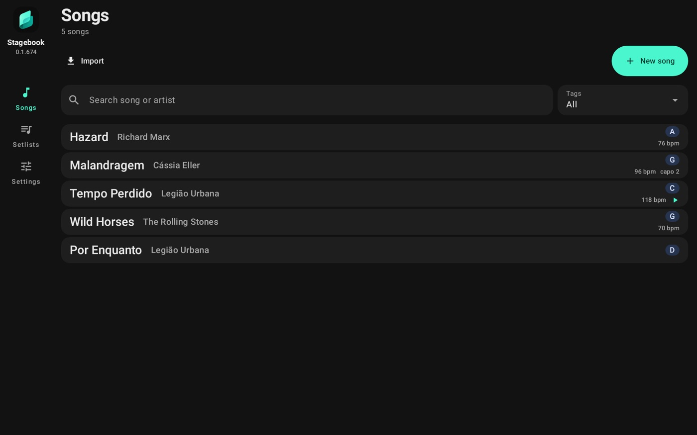
Search and filter
You can search by title or artist and filter by the tags you created. With a filter on, the total at the top also shows how many are left, the list goes back to the start and the × next to it clears everything.
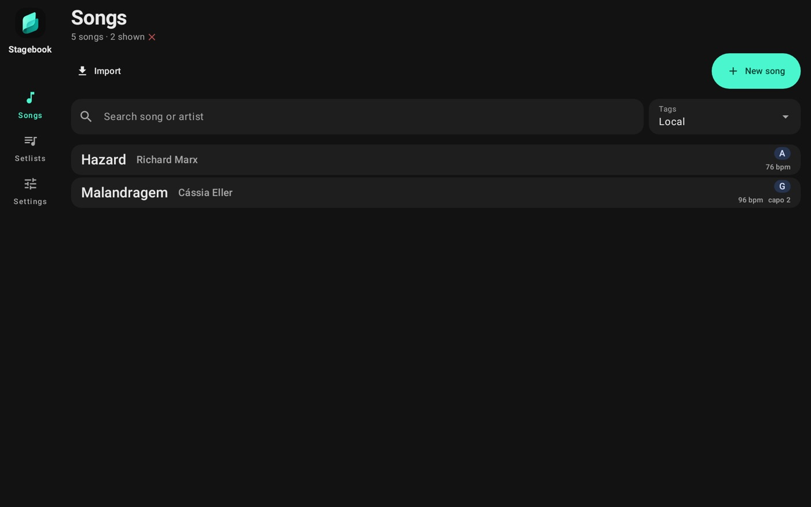
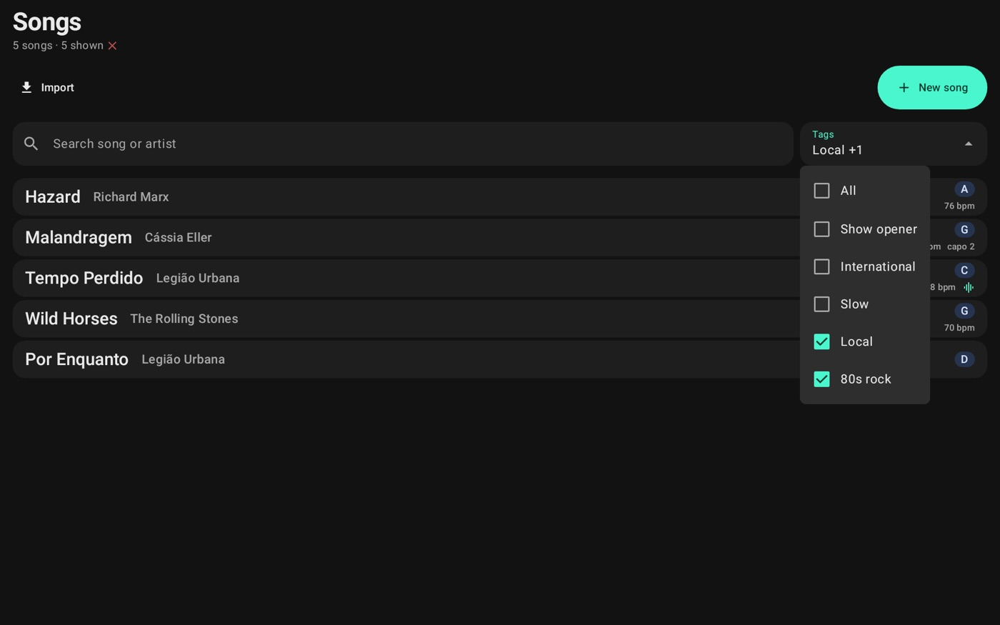
Select several
Hold a song to select it. Then tap the others, or Select all, to add them to a setlist, change their tags, share or delete them at once.
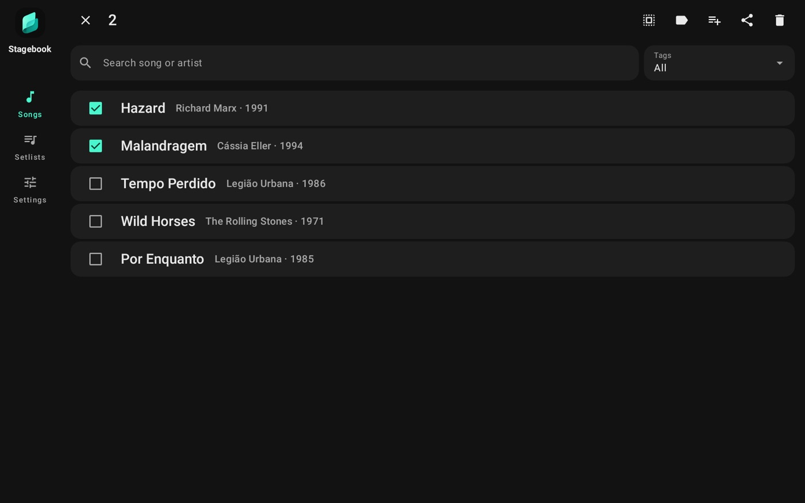
Icons next to the title
- Leaf: essential mode is on.
- Group with a number: the band sent something.
- Computer: the web editor is on.
Tap an icon to go straight to it.
Importing
The Import button, on the Songs tab, gathers everything that brings songs in:
- Sync with the band: looks for what's new from the band right now.
- Received from the band: what the band sent, for you to check.
- From the web: opens the sites on your list.
- Scan QR: reads a setlist's QR with the camera.
- Type the 3 words: receives what someone sent over the internet.
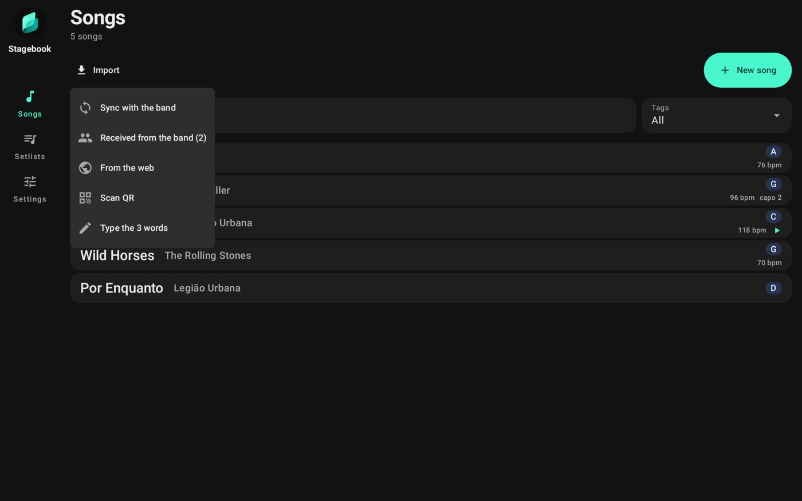
From the web
The importer opens the site marked in Chord sites. Type the song, the artist or the page address; a typed search goes to Google. Open the song's page and tap Import. If the app can't find the lyrics, select them with your finger and tap it again.
The app only downloads what you ask for, and what you import stays on this device. If the text doesn't look like lyrics or chords, the app won't take it.
The song opens in the editor for you to check and save.
Key, capo, artist and year
Key, capo and BPM come from what the page says, on any site. With a capo, the saved key is the one of the chart's shapes. Whatever is missing of artist, year and BPM the app fills in over the internet. Offline, fill it in under Song details.
Tablature
If the chart has tablature, the app asks whether to bring it: With the tab or Without the tab. You can delete it later in the editor.
Song editor
In the editor the lyrics get the whole screen. The presentation icon at the top, See it on stage, shows the result before you save, and the pencil goes back to the text.
Song details
Name, artist, year, BPM, key, capo, tags and backing track are under Song details at the top. Tap to open them. Left artist or year blank? When you save, the app fills them in over the internet.
In Tags you check the song's tags or create a New tag.
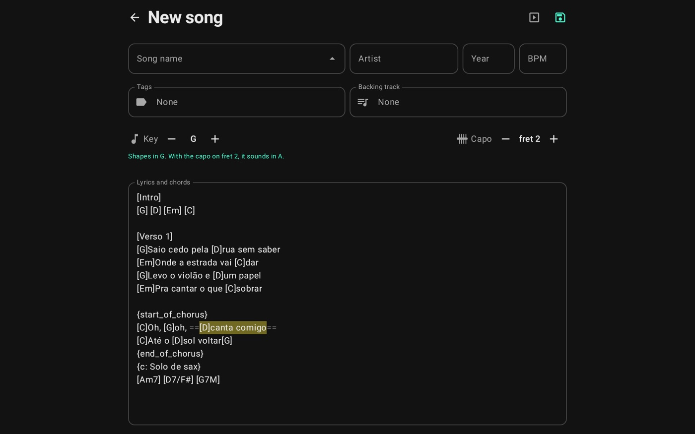
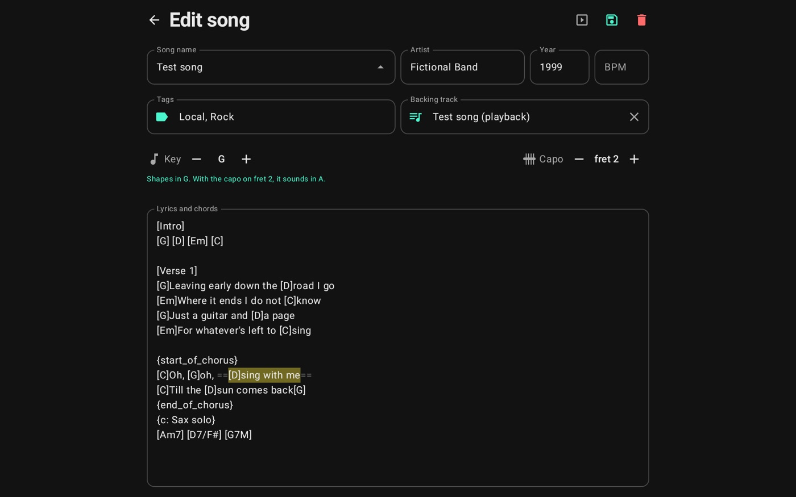
Key and capo
The key's − and + transpose the chords a half step at a time. The capo's don't change the diagrams; they only tell you what key it will sound in.
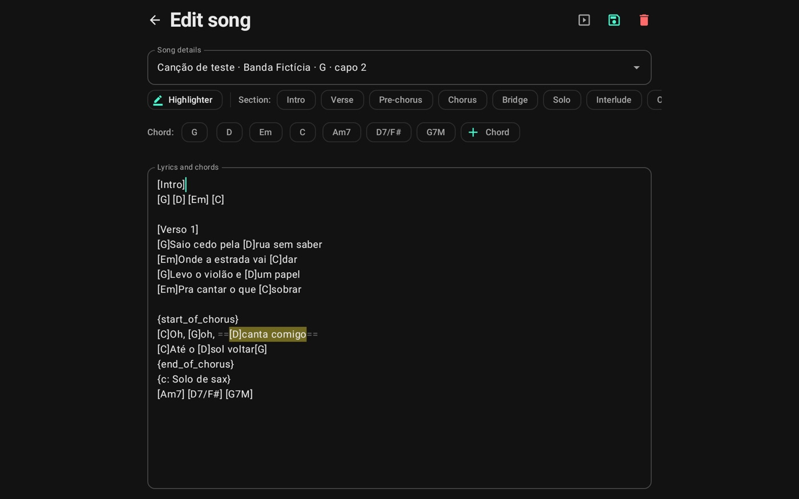
Chords
Chords go in brackets, inside the lyrics: [G]Here I [D]go. If you paste a chart with the chords on the line above, the app converts it for you. The shortcuts above the lyrics insert the song's chords, and Chord inserts a new one. A bracket with an asterisk, like [*2x], is a note. It shows above the lyrics with the chords, but it isn't a chord. Inside a word, it moves to the end of the word.
They stay written the way the site wrote them (A7+, E7/9, E*), and the app shows the right diagram for each.
Notes on the chords line stay on that line on stage: repeats like 2x or (x4), bars |, labels like Intro: and a comment after a dash, like Am G6 - Intro riff. A chord followed by the fret of each string (B/F# 224442) shows like the other chords, with the frets beside it, and its acoustic and electric guitar diagram uses those frets. When you transpose, the frets move with the chord.
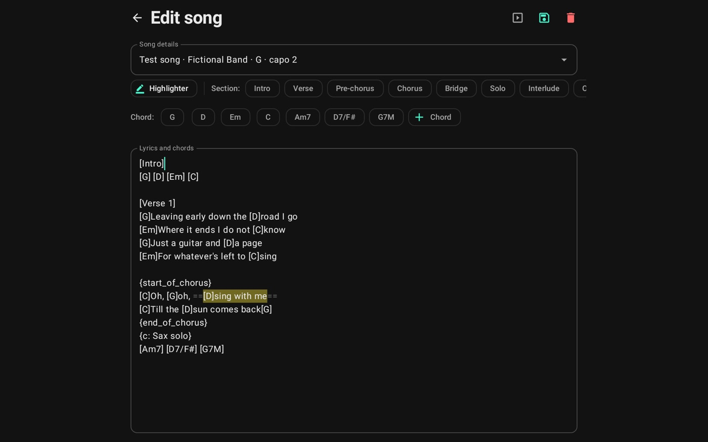
Song parts
A line with just a name in brackets becomes a part title: [Chorus], [Violin solo]. The shortcuts at the top add the usual parts.
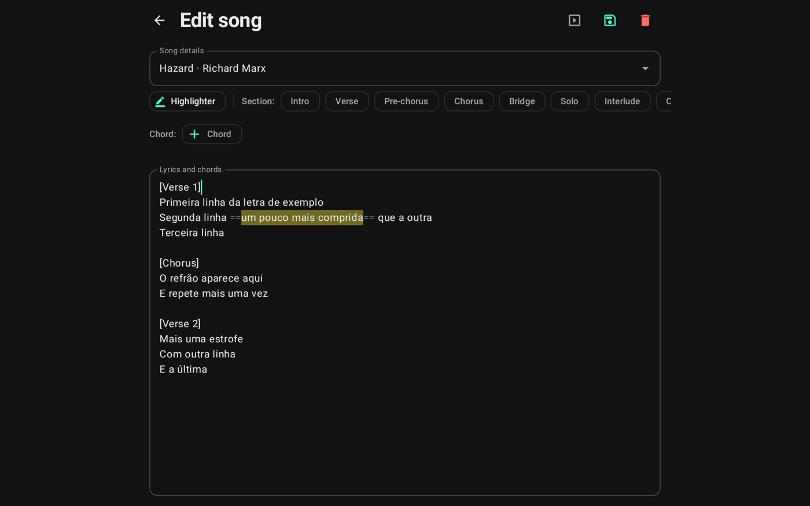
Saving and deleting
A song needs a name, and you can't have two with the same name and artist. If you leave with something unsaved, the app asks first. The trash can, on a saved song, deletes it, and it also leaves the setlists.
Highlighter
To highlight a phrase, select it in the lyrics and tap Highlighter. It shows painted in the editor and on stage. The color is in Stage look.
Song MIDI
A song can send MIDI messages when it shows on stage and when you leave it, to change your pedalboard's preset, the mixer's scene or the keyboard's sound. Tap the keyboard icon at the top of the editor. It's lit when the song sends something.
Under On entering and On leaving, add the messages: Program change (PC), Control change (CC), Note (Note On/Off) or Bank and program (CC0/CC32 + PC), each with its channel. The numbers stay inside the MIDI standard: program 1 to 128, controller, value and note 0 to 127, bank 0 to 16383. The MIDI is saved with the song and goes in the backup, but not to the band, since each musician has their own gear.
Where it goes is in MIDI out. In essential mode no MIDI is sent.
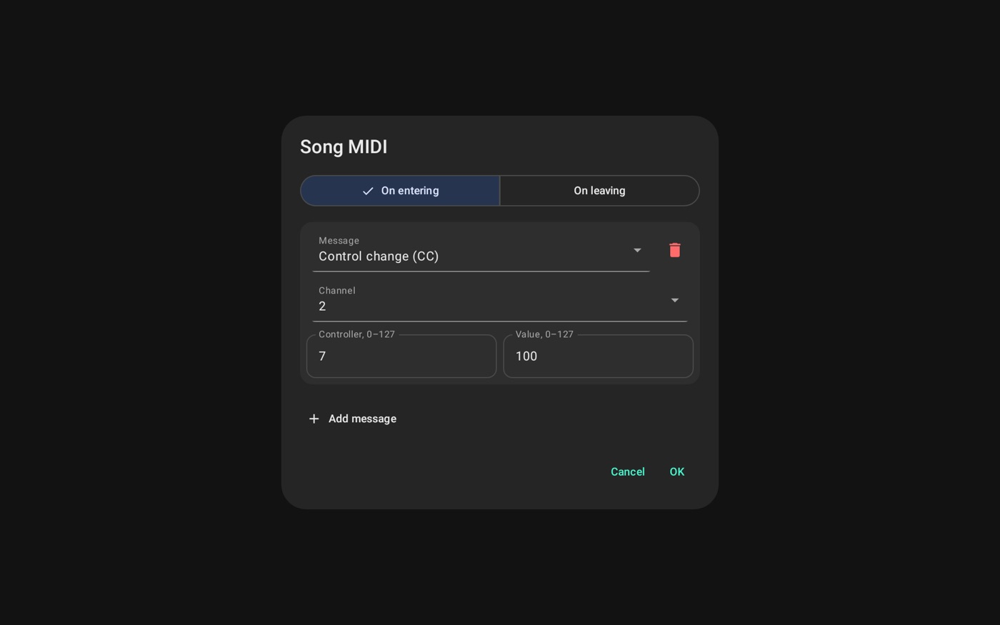
Setlists
To create a setlist, tap New setlist. With no name it takes the date and time. Above the list you can search by name and, in Order, show the newest first or A to Z. With a search on, the total at the top also shows how many are left, and the × next to it clears it.
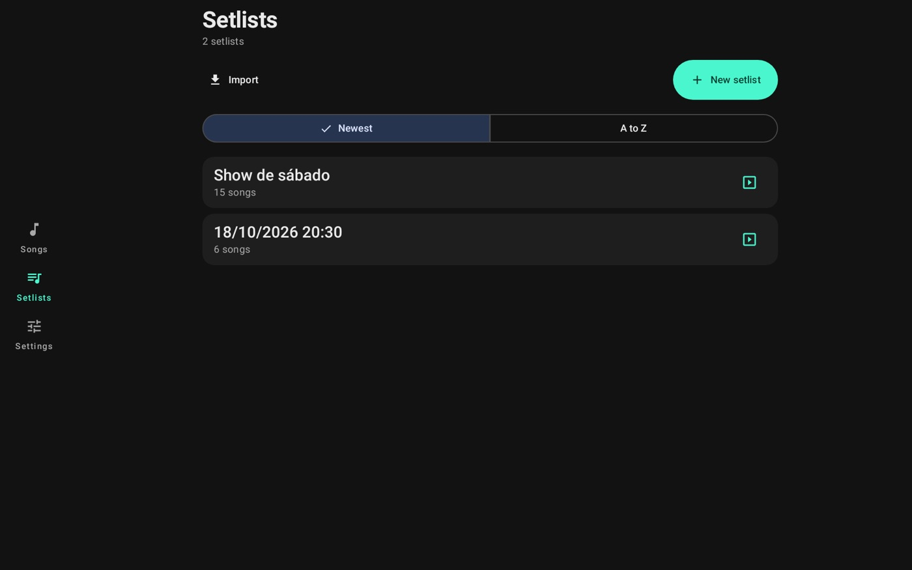
Inside a setlist
- Tap the name to rename it. The trash can at the top deletes the setlist, and the songs stay in the library.
- Drag songs to change the order. Hold one to select it and take it out of the setlist.
- The play button at the top opens the setlist on stage, and tapping a song opens the stage on it.
- Share sends the setlist, and the group icon leads the band.
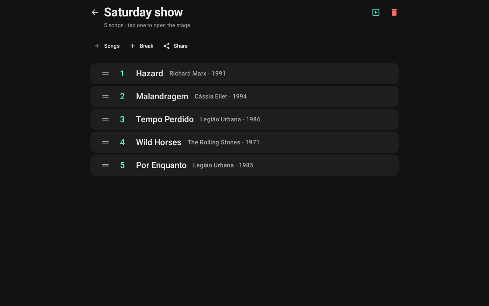
Adding songs
Inside the setlist, tap Songs and check the songs in the order they'll be played. Search and tags help you find them. You can also do it from the Songs tab: select several and use Add to setlist.
A setlist has to fit in a QR, so its size has a limit. When it's full the app tells you: create another.
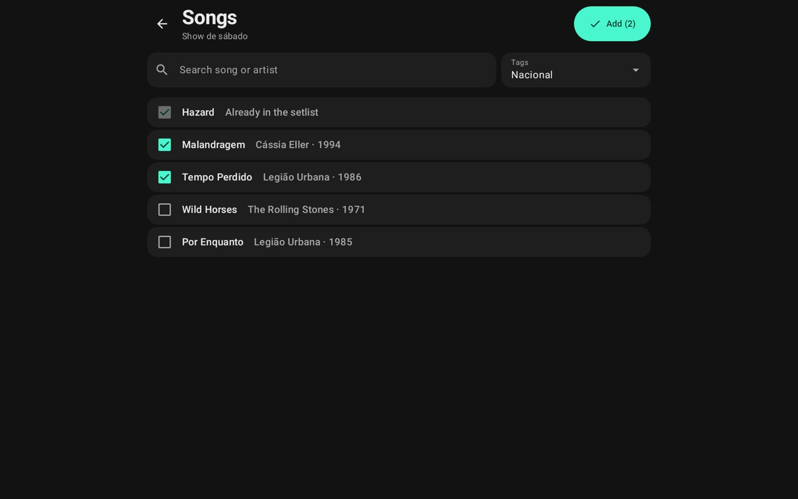
Sharing and QR
In a setlist, or with several songs selected, Share offers the ways below. Whoever receives always checks before anything comes in.
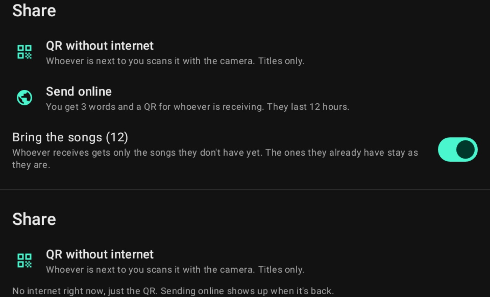
QR without internet
Whoever is next to you reads it with the camera, in Import → Scan QR, even offline. Only the titles go. The first time, the app asks for the camera.
3 words over the internet
Send online makes 3 words and a QR for whoever will receive. You can say the words, copy them or send them in a message. They last 12 hours. The other person goes to Import → Type the 3 words.
The message also has a link. Tapping it opens Stagebook straight on the receive screen. Someone without the app yet goes to the download page, and the link stays copied: when they open the app for the first time, it receives by itself. A link tapped with the stage or a song editor open waits until you leave.
With Bring the songs on, the lyrics go too. The other person only keeps the ones they didn't have; theirs don't change.
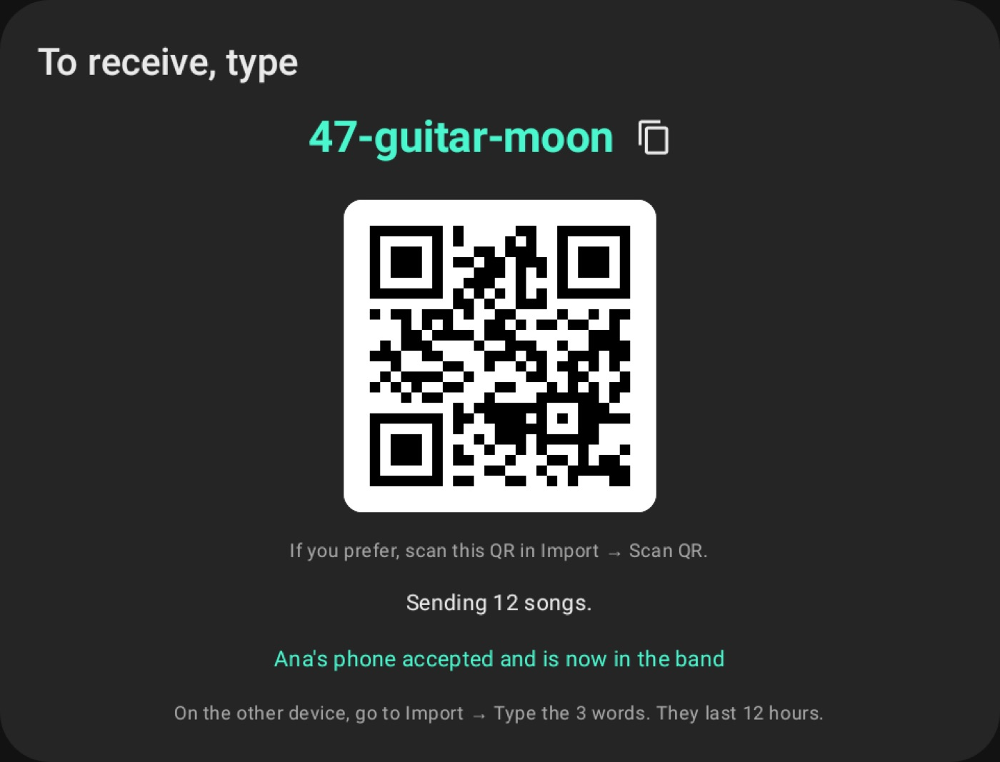
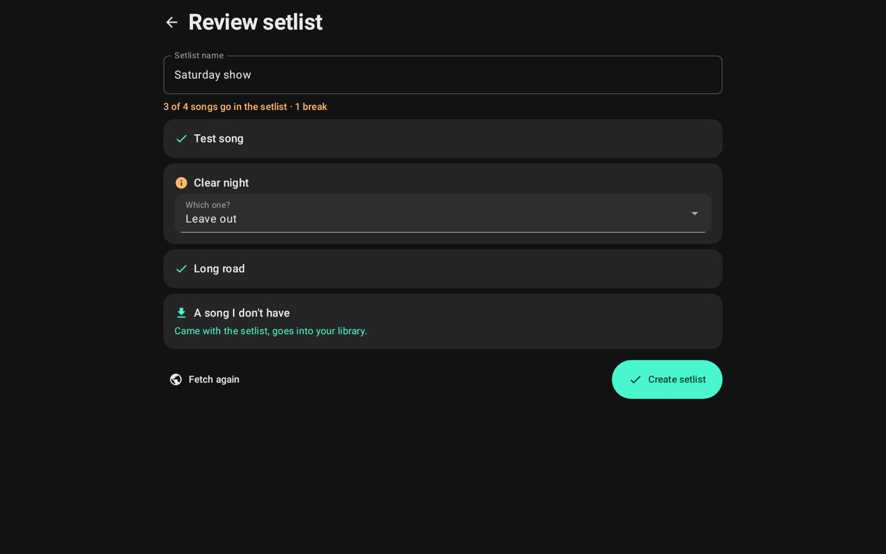
Checking what arrived
By QR, 3 words or from the band, the review screen is the same. It shows what's new, what you already have and what's missing. Before creating, the app tells you what will be left out.
If you have another version of a song, See what changes shows the difference, and you pick Use theirs or Keep mine. If only the lyrics came, you can accept them or use Find with chords.
If a setlist with the same name already exists, you pick Replace or Create another.
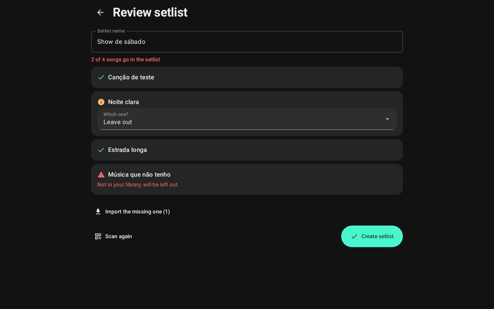
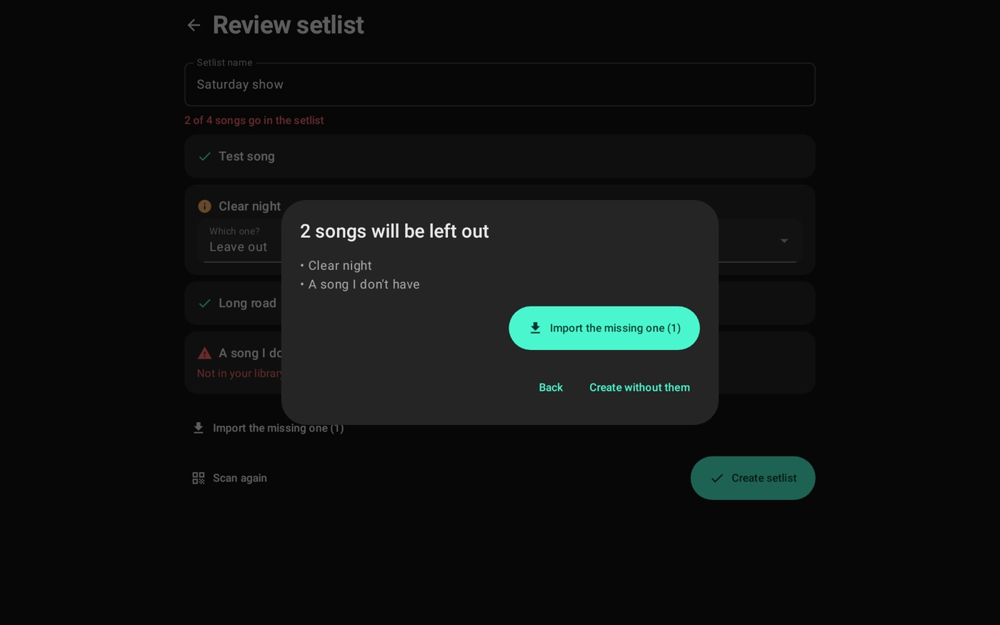
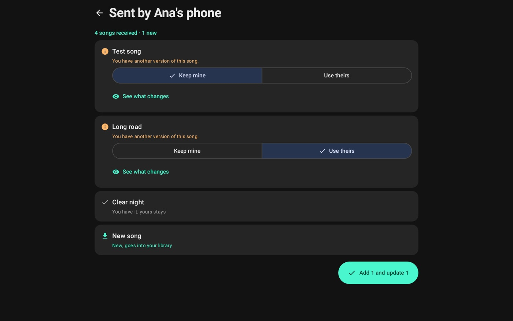
Getting the missing songs
- Ask the band: if someone is on the network.
- Ask for the missing ones online: shows with the sender's name, if they're in the band. The songs arrive later in Received from the band.
- Import the missing ones: always possible, from the sites on your list. The app opens one song at a time, and you can skip or stop.
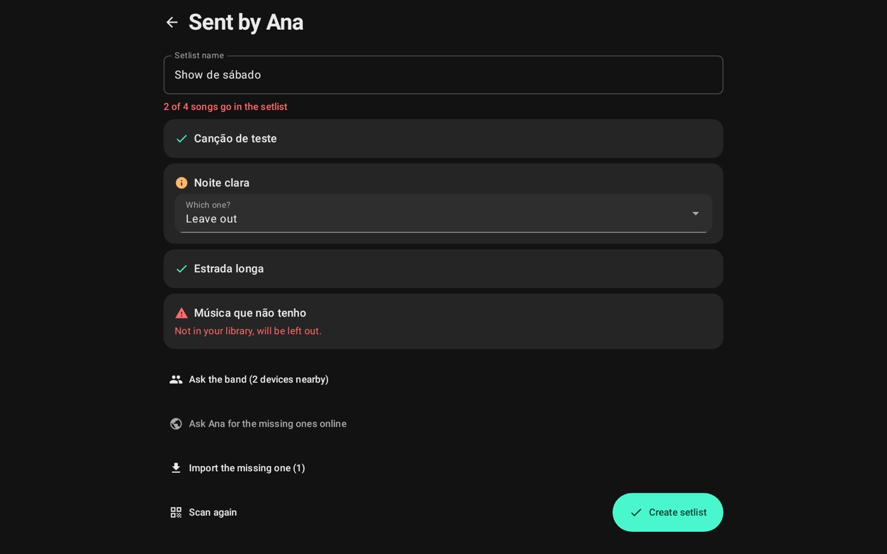
Stage
On stage the lyrics show large, with the chords and parts. In a setlist, the top shows the position, like 2 of 12, and the end of the song shows the next one. While the stage is open nothing pops up over it: whatever the band sends waits.
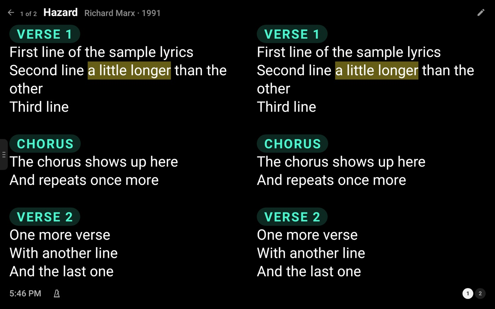
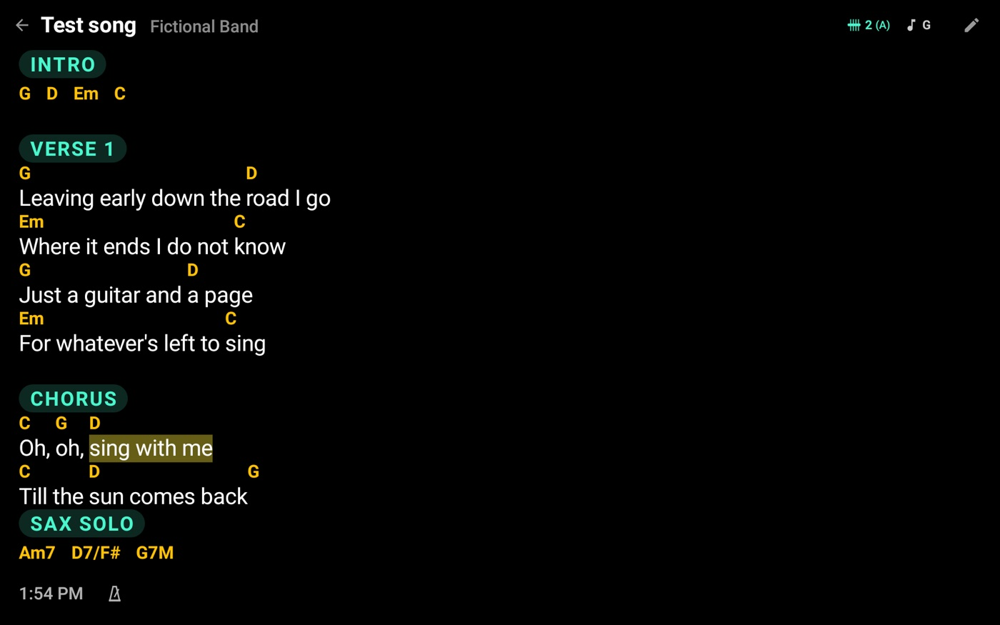
Turning the page
- Tap: the right side goes forward, the left side goes back.
- Finger: drag sideways.
- Pedal and MIDI: see Pedal and MIDI.
In a setlist, going forward on the last page moves to the next song, and going back on the first page returns to the previous one. A pedal button can also jump straight between songs.
Rather scroll the lyrics? Change it in Stage look. In Scroll, each tap or pedal press goes to the first line that didn't fit, and it lights up for a moment. Since the text moves up and down, the gestures are vertical too: tapping the lower half moves forward, tapping the upper half goes back, and dragging up moves forward while dragging down goes back. The Automatic zoom works in Scroll too: there it uses the biggest size at which the song's longest line fits whole on the screen's width, upright or on its side. The dots in the footer count the scroll steps; when they don't all fit, they're abbreviated like the pages, with the last one always in view.
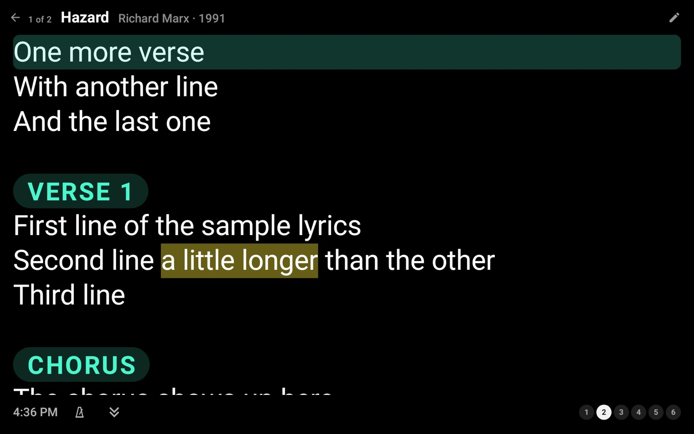
Auto-scroll
In Scroll mode, ▶ moves the lyrics up on their own, at the speed you pick. Tapping the screen or pressing the pedal pauses it.
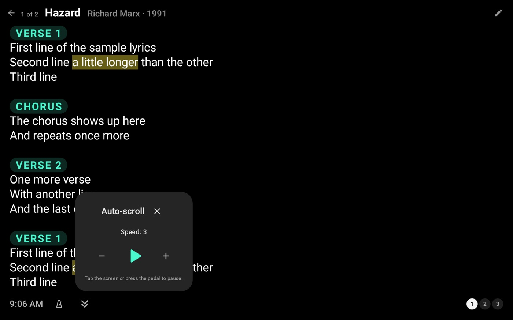
A song's zoom
How it works. Each song keeps one zoom for each screen size and position: upright and on its side are two separate values. The first time a song opens in a position, the app calculates the zoom and keeps it: the largest size with the fewest pages, without cutting a verse. If a slightly smaller letter saves a page, it gets smaller. If a section would cross a page turn, the lyrics get a little smaller to keep it whole. Each section starts a new verse. With no sections or blank lines, the lyrics count as a single verse.
Pinch and Automatic. Spread or pinch two fingers to choose the size. It applies only to the open song, in this position: when you turn the screen, the other position keeps its own zoom. The notice shows the percentage and the Automatic button, which clears your choice and calculates again. With the chord list on, the zoom changes only the lyrics and chords.
Columns. In Split into columns, Automatic decides for each song and each zoom, calculated or chosen by you. A song that fits one page stays in 1 column. On its side, it uses 2 columns whenever they take fewer pages. Upright, it uses 2 when nearly all lines fit half the screen. With a pinch, the lyrics can grow past half the screen and go to 1 column. With 1 or 2 fixed columns, the zoom follows your choice.
When it calculates again. The calculated zoom holds while the lyrics and the look of the stage stay the same. If you change the lyrics, the lyrics size in Settings or the columns, the app calculates again. A zoom you chose doesn't change.
Export. The .stagebook file and the songs file carry the zooms of every screen, calculated and chosen. On another device, a song uses the zoom of that screen's size and position. If there's none, it calculates its own.
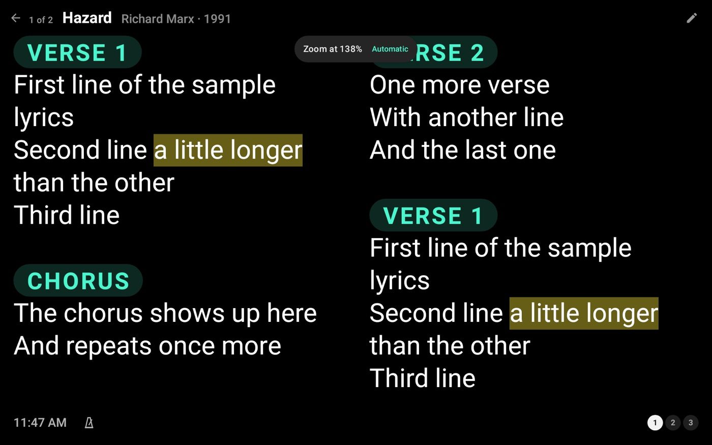
Key and capo
Key and capo are at the top. Tap them to change them right there, and it's saved in the song.
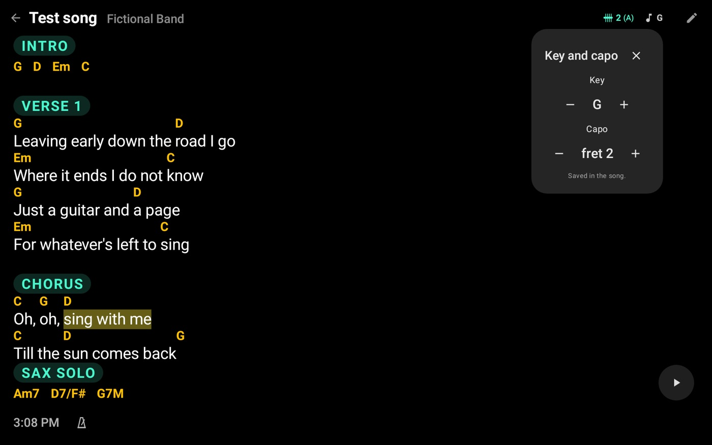
Fixing and marking
The pencil at the top opens the editor on this page. Holding a line shows Edit this line and Highlighter.
With the Highlighter on, run your finger over the words to mark them. Again removes it. While it's on, the stage doesn't turn pages by touch; tap Done to finish.
Leaving the stage
The arrow at the top leaves the stage. In a setlist, or following the band, it asks first, so a stray tap doesn't take the lyrics off the screen during the show. A song opened from the Songs tab leaves at once.
Chord diagram
Tap a chord to see its diagram for acoustic guitar, electric guitar, ukulele, cavaquinho or keyboard. The arrows change the variation, Use this one keeps it in this song and Play makes the sound. Tapping a chord in the chord list opens the same diagram.
With a capo, the diagram shows it on its fret, with the shape played from there. On keyboard, the chords show adjusted so you can play along with the band.
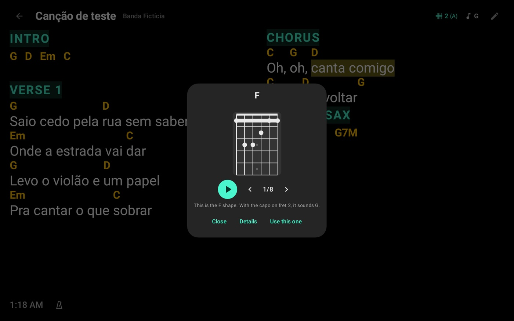
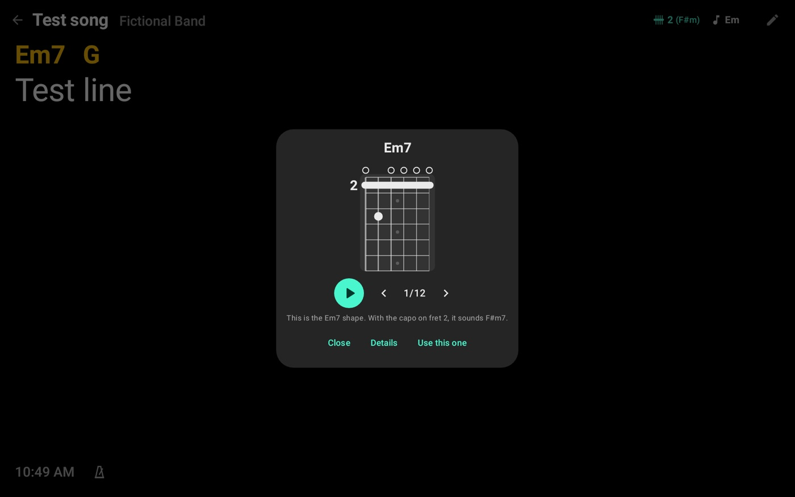
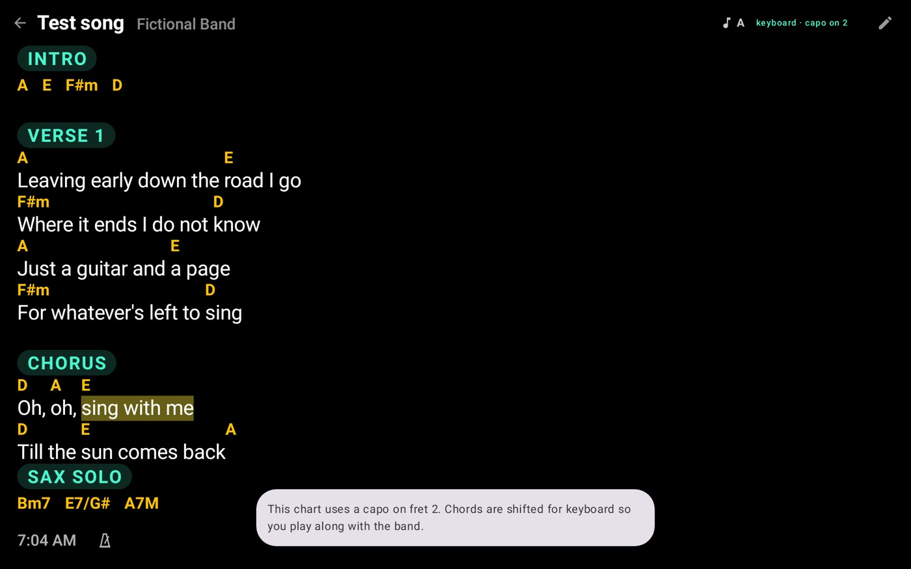
Chord details
Details shows the chord's degree in the song's key, its harmonic field and where else it appears. With a capo, the harmonic field shows what sounds, not the chart's shape.
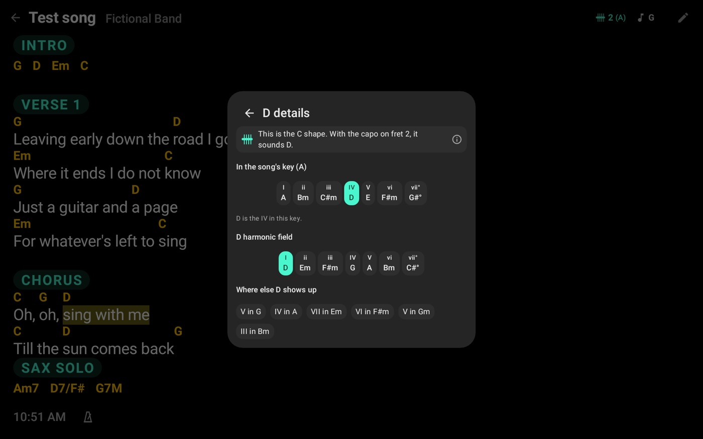
Chord list
The diagrams of all the song's chords can sit at the start or end of the stage, grown to fill the screen's width. A long list runs on to the next column or page, always at the same size. Turn it on in Chord diagrams.
Hold a chord to take it off the list. The × in the corner hides the whole list in that song, and the arrow button brings everything back.
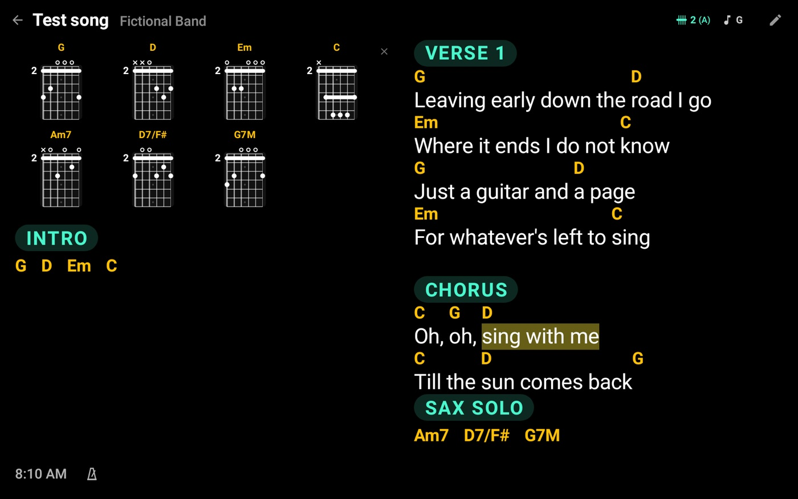
Tablature
Tablature shows inside the lyrics, the way it came in the chart. It shrinks to fit the column and the page, and its strings always stay together. The lyrics' zoom doesn't depend on it.
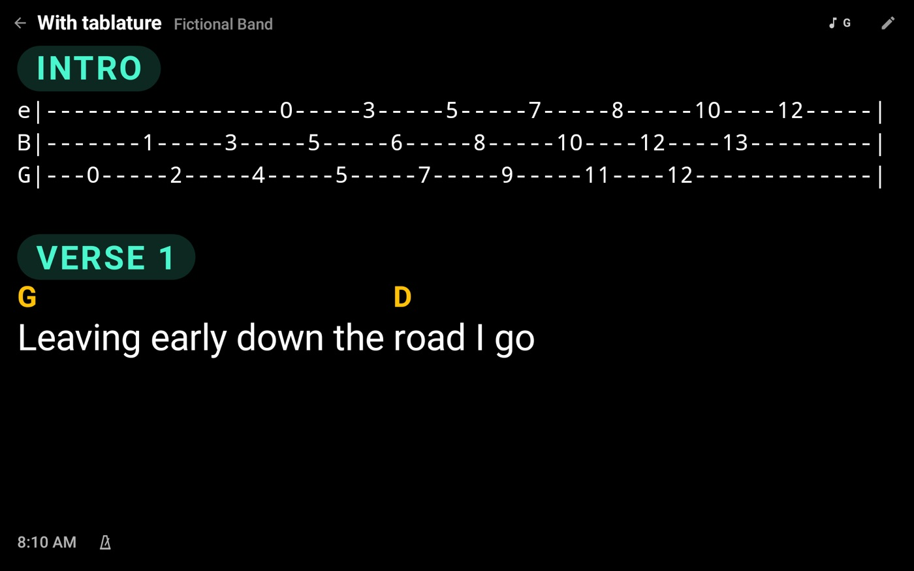
Metronome
The metronome is the icon at the bottom, next to the clock. It starts at the song's BPM, or 100 if it has none, and changing the BPM there saves it in the song. Right there you start it, stop it and change the speed. Count-in, sound and glow are in Metronome and player.
Turning the metronome on with its output on the USB interface turns the interface on by itself, with or without a track.
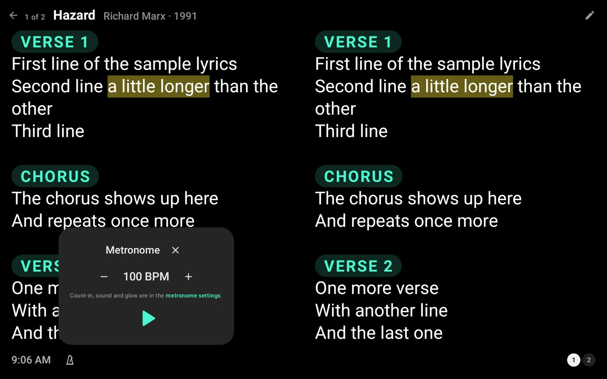
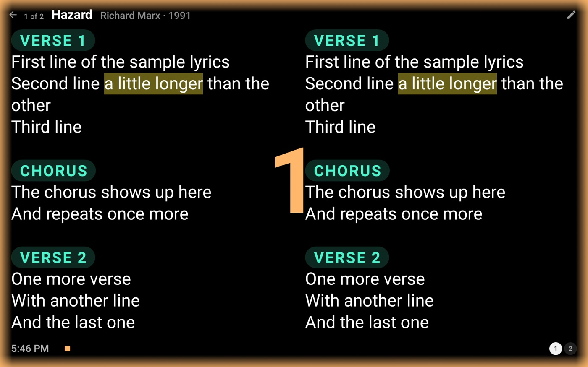
Clock and show time
Tapping the clock changes what it shows: the time, the show time, with a stopwatch, and the time left, with an hourglass. The show time starts counting the first time it shows up. In the last 10 minutes the time left turns red, and past the end it shows how late you are with a minus sign.
Holding the clock opens Show length. The − and + buttons change it half an hour at a time, starting at 1 hour, and Start counting now resets the show time. A show started more than 12 hours ago counts as a new one.
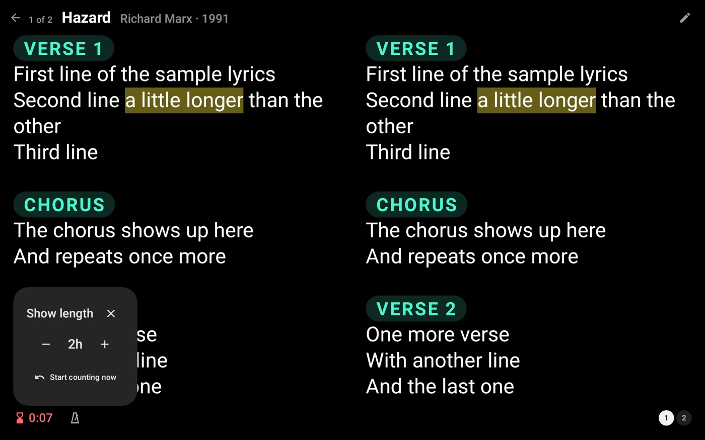
Backing track
Each song can have a backing track, as multichannel OGG, MP3 or WAV. Pick it in Song details. On stage, play only shows on songs that have one. If a song's audio didn't come with it, an alert shows where play would be. Tap it to see the audio's name and attach it again.
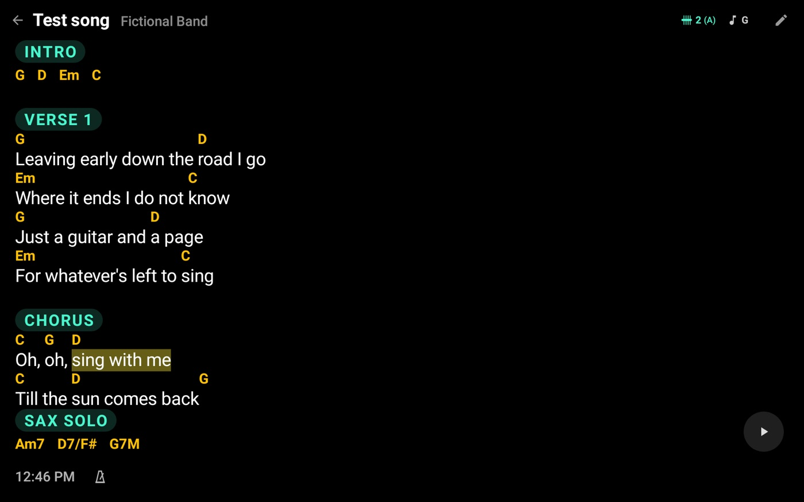
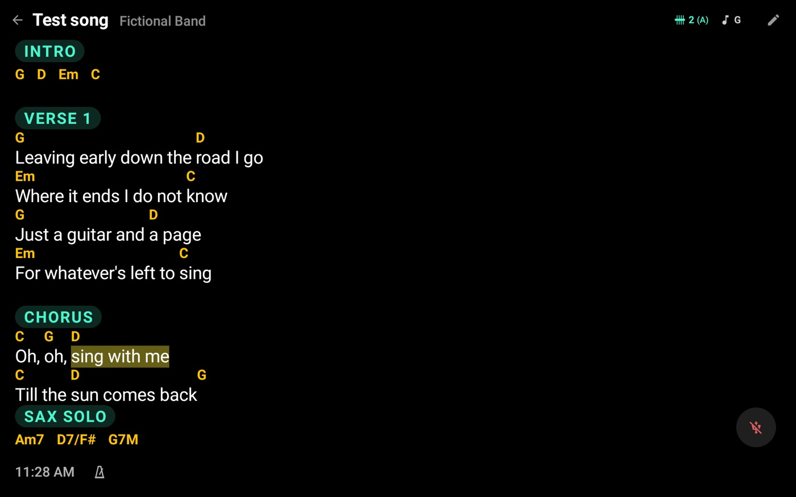
Playing and changing
When the song ends it stops and goes back to the start. Hold play to change or remove the track and to open the song's mixer.
Changing songs while a track plays doesn't stop it: it goes on until you tap stop or it ends, and the stop button stays on any song meanwhile. Then play plays the song on screen.
For the track not to stop with the screen off, Android has to free Stagebook from battery saving. The app asks in a window, once on each device: tap Continue and then Allow.
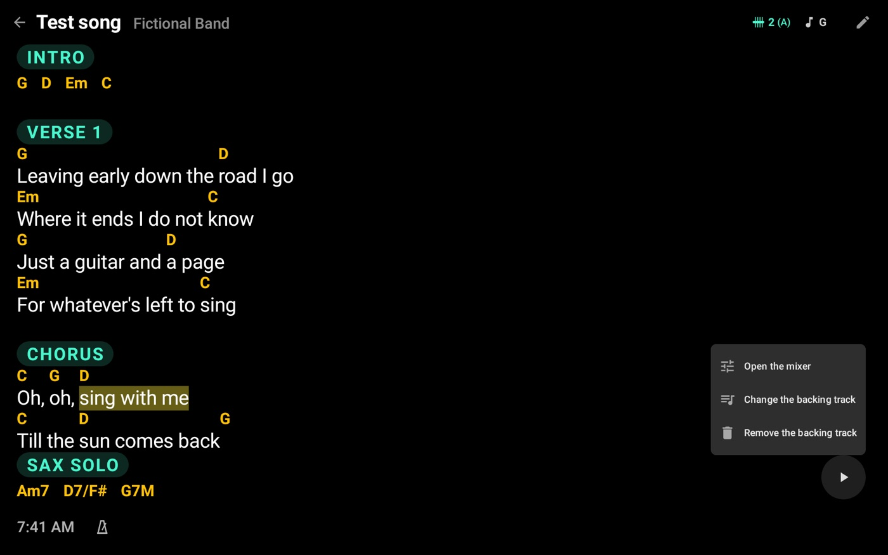
Where the sound goes out
Sound goes out through a USB audio interface, with USB Audio 1.0 or 2.0, at 44.1 or 48 kHz, or the device's own output. If the interface disconnects mid-show, the app waits for it to come back instead of sending the sound to the speaker.
With nothing playing, the USB stream closes after 10 seconds and opens again on play or when the metronome starts, with a notice to wait. The player itself turns off by itself after 10 minutes with the app out of sight, or if the interface doesn't come back within 10 minutes. Swiping the player's notification away turns it off too. While playing, the notification comes back.
On some devices, the interface connects but there's no sound or it stutters. If Stagebook's engine fails several times in a row, the app moves to Android's audio by itself and saves that choice for the interface. You can also turn on Play on the interface through Android, in Metronome and player. That way the device's media volume counts, kept for each output. If it's at zero, the song plays with no sound and the stage tells you: raise it with the volume buttons.
The first time with the interface
- Plug the interface into the USB cable. Android asks which app to open: tap Stagebook and Just once.
- Stagebook opens and asks for audio access: allow it. If the stage says "Allow USB in Android's window", that's Android's window asking for it.
- Unplug and plug the cable again, pick Stagebook and tap Always.
That's it: when the cable comes back, the sound returns by itself, without asking anything. If the cable comes out while a song plays, the track button blinks the USB unplugged icon in red. If the cable is back within 1 minute, the song carries on by itself where it was, even if the interface takes a few more seconds to start. After that, the song stops and goes back to the start. Tapping the icon while it waits stops the song too. Stagebook records nothing; the interface's input only keeps the clock.
What was tested
Everything passed on version 0.1.900. A pass means: a whole song heard clean, pause and resume, and unplugging and plugging the cable with the music playing came back on its own. Interfaces: the Behringer FLOW 8 mixer (USB Audio 2.0, 4 outputs) and the Nanocore card (USB Audio 1.0, 44.1 kHz).
- TCL NXTPAPER 11 Plus (tablet, Android 14): passed with both interfaces. On version 0.1.1011, the Behringer UMC404HD (USB Audio 2.0, 4 outputs, powered by the tablet, plugged in directly) passed too: a whole song clean, stop and play again, and unplugging and plugging the cable with the music playing.
- Chuwi Hi10 XPro (budget tablet, Android 13): passed with both. With the mixer, the tablet's USB loses reads on the interface's input, so the app paces itself from the system clock: the sound is clean, with a rare short hiccup every 15 to 60 s.
- Samsung Galaxy S26 Ultra (phone, Android 17): passed with both. With the mixer, the interface's input stops answering after about a second, and the app notices and paces itself.
- OnePlus 10 Pro (phone, Android 16): passed with both, and with the mixer on both routes (Stagebook's engine and Android's audio).
Not tested: the UMC404HD on the other devices, other interfaces and a plain USB headset (supported, but not on this list).
If you hear small hiccups
The app follows the interface's own clock when the device allows it. On some tablets the USB clock is weak: then the app paces itself from the system clock, and a rare tiny hiccup may remain. It's not a fault of the interface or of the app, and Android's own audio route has the same limit.
On some phones, reading the interface's input while playing makes the output stop. The app notices the first time, goes quiet for a few seconds and plays again without the input, paced by the device's clock. From then on that interface opens that way on that device.
On Stagebook's engine route, Android asks permission to use the USB interface the first time: tap OK.
If the interface connects and the sound doesn't come out or breaks up, turn on Play on the interface through Android, in Metronome and player.
Mixer
The mixer is only on the stage, over the playing song, so you adjust while listening. Play a song, hold play and open the mixer. Nothing plays in Settings, so it couldn't be adjusted by ear.
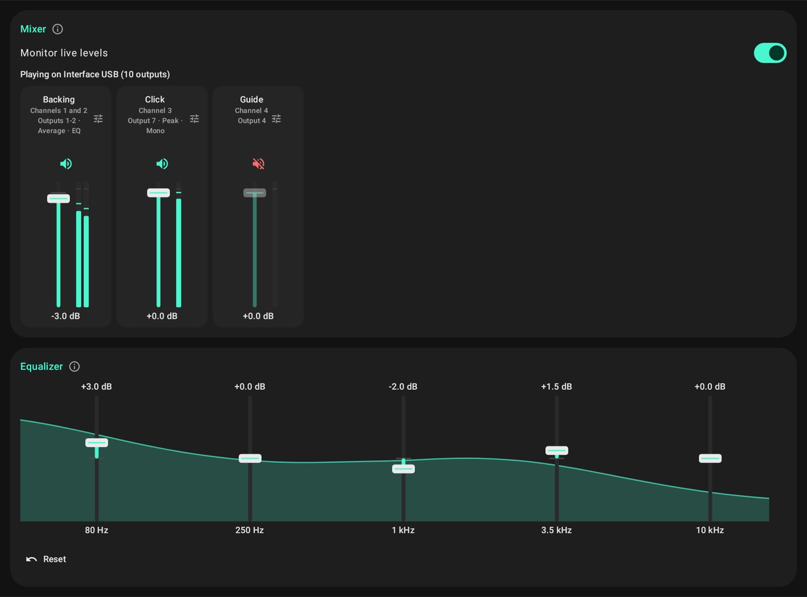
Channels
The mixer has one channel per file channel, with a fader and a button to turn the channel off. Monitor live levels shows each one's signal. Tap a channel's name to rename it, and the icon next to it opens the other settings:
- Output: which interface output it plays on. Any of the first 32 outputs works, like the 18 of a digital desk. Through Android, the system gives at most 8 outputs. An output above that turns red and doesn't play until you go back to the usual way. The choice is kept for each interface.
- Even out the volume: No plays it as recorded, Average gives all songs the same perceived volume and Peak the same peak.
- Stereo and mono: joins two channels as stereo, or plays in the center, the same on both sides.
- Equalizer on: sends the channel through the equalizer.
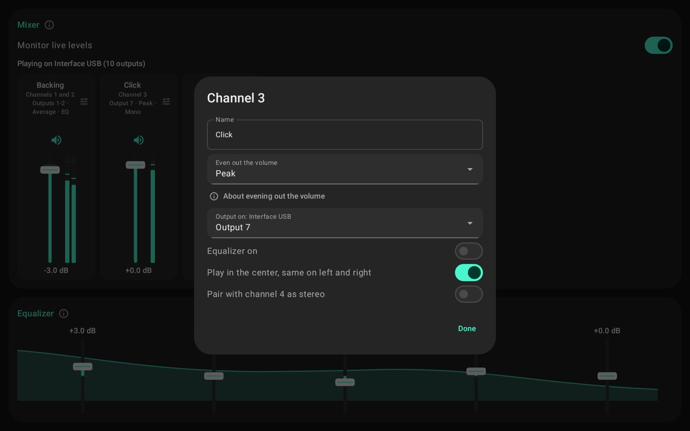
Global or song mixer
With Use the global mixer on, what you change applies to every song. Off, it applies only to that song. Going back to the global one erases the song's own settings.
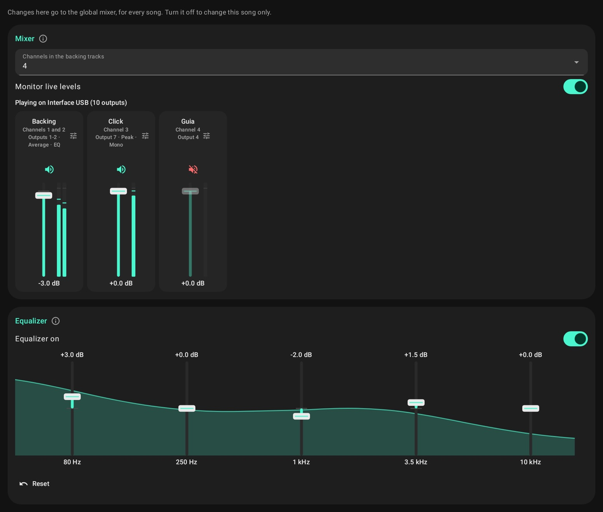
Equalizer
It has 5 bands in a single curve, applied to each channel marked EQ, each one separately. A limiter holds the peaks, and Reset flattens the curve. It turns on by itself when you mark the first channel and off when you unmark the last one. With no channel marked, you can still set the curve, and the screen tells you it has no effect yet.
Band
Once allowed, the band's devices exchange setlists and songs without the 3 words and can follow whoever leads.
Joining the band
With the devices on the same Wi-Fi, which can be a phone's hotspot, both open Band and broadcast. One taps Ask to join and the other taps Allow. After that they know each other until someone removes it. The first time, the app asks how the band will see this device.
Far away? Anyone in the band taps Invite over the internet, in the same place, and sends the message any way they like. Tapping the link opens Stagebook on the invite, like "Ana invited you to their band", and then Join the band. Someone without the app yet downloads it from the link's page, and the invite shows up when they open the app for the first time. The invite only opens from its link: typing the 3 words is not enough, and anyone who loses the link asks the person who invited them for it again. The invite lasts 12 hours and is for the first person who joins. To bring in more people, send each one a new invite. If someone else already used the link, the app says so. A link tapped while the stage is open never interrupts the show: the app keeps it and opens it when you leave the stage. While editing a song, it waits until you leave the editor, so nothing you typed is lost.
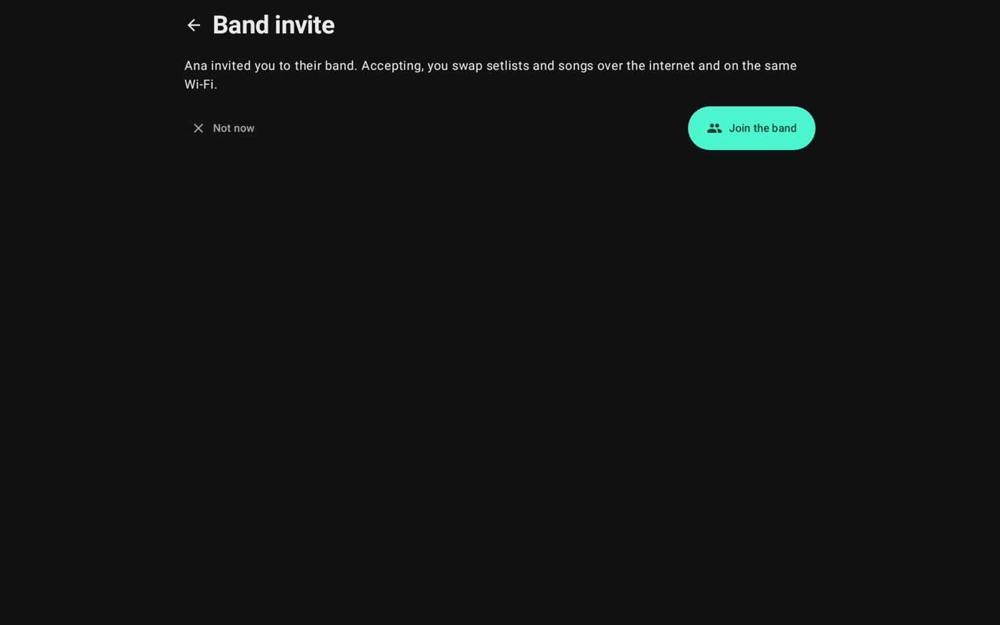
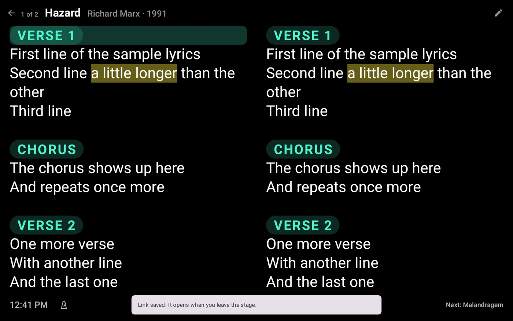
Sending and receiving
Sending a setlist to the band takes one tap, in Share. Whoever is on the same Wi-Fi gets it right away; the others get it over the internet when they open the app, within 12 hours.
When something arrives you get a short notice at the bottom and a number on the band icon next to the tab's title until you check it. It all stays in Received from the band: Check opens it, and the trash can discards it. If more than one person sent the same setlist, open each version and pick one.
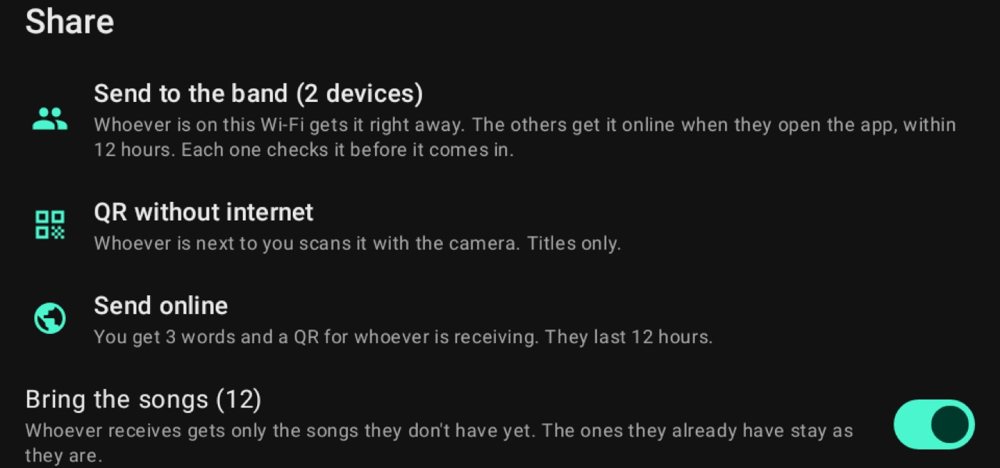
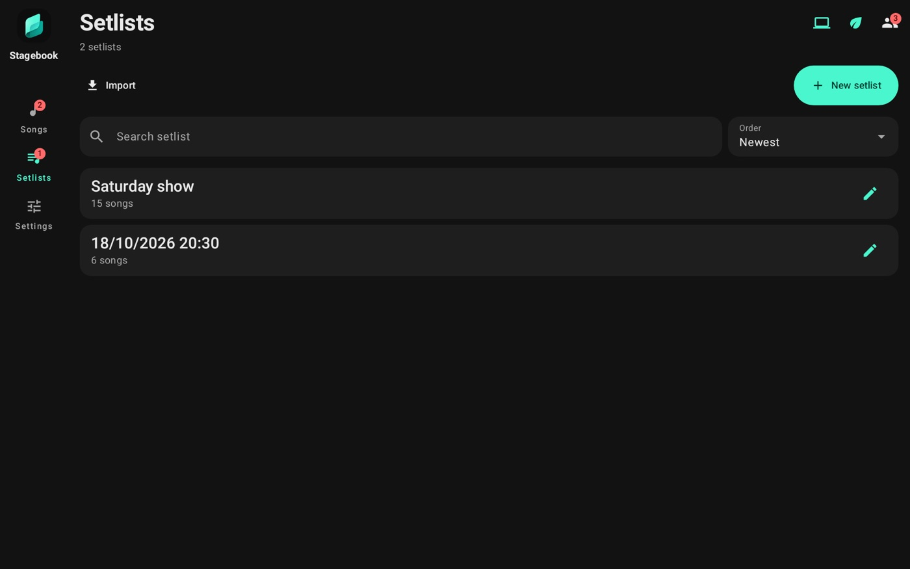
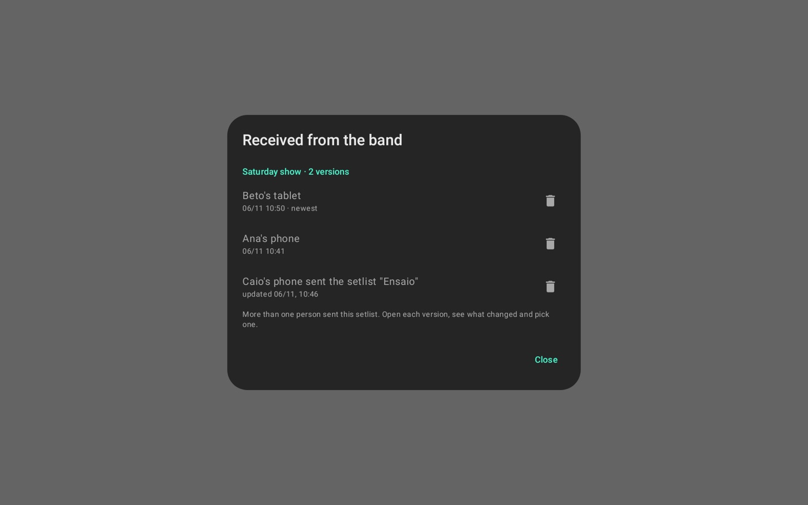
Leading the band
Lead the band is the group icon at the top of a setlist. It opens the stage, and band devices with the app open on the same Wi-Fi switch to Following by themselves, on the same song, and follow every change.
- Followers don't need the setlist, only the songs. If one is missing, the bar at the bottom turns red.
- At the end of each song they see the leader's next one.
- Someone who opens the app later joins by themselves within seconds. If not, tap Look for the band.
- Someone editing, picking songs, receiving or importing isn't pulled off the screen: the song opens when they come back.
- The leader sees in See what's missing who lacks each song.
- Leaving the stage doesn't end it. Tap End for that.
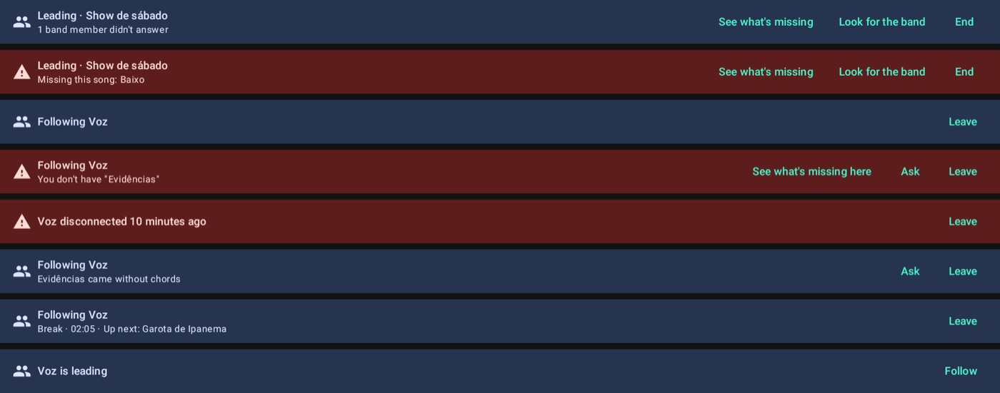
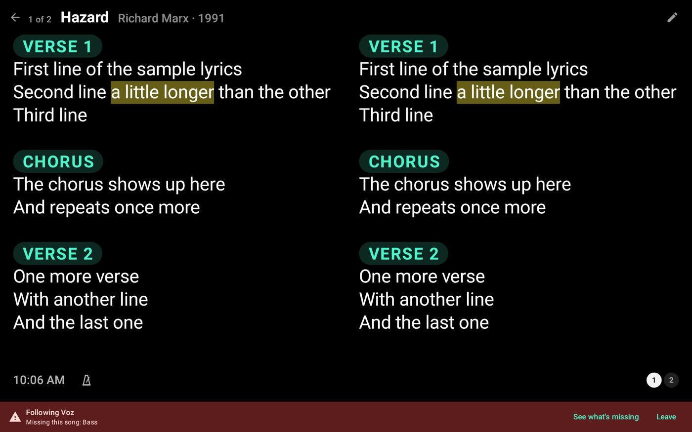
Settings
The items below follow the order on screen. On a tablet lying down, the list sits on the left and the open topic on the right. On the cards, the ⓘ next to the title explains what they do. With essential mode, some items and options disappear until you turn them back on.
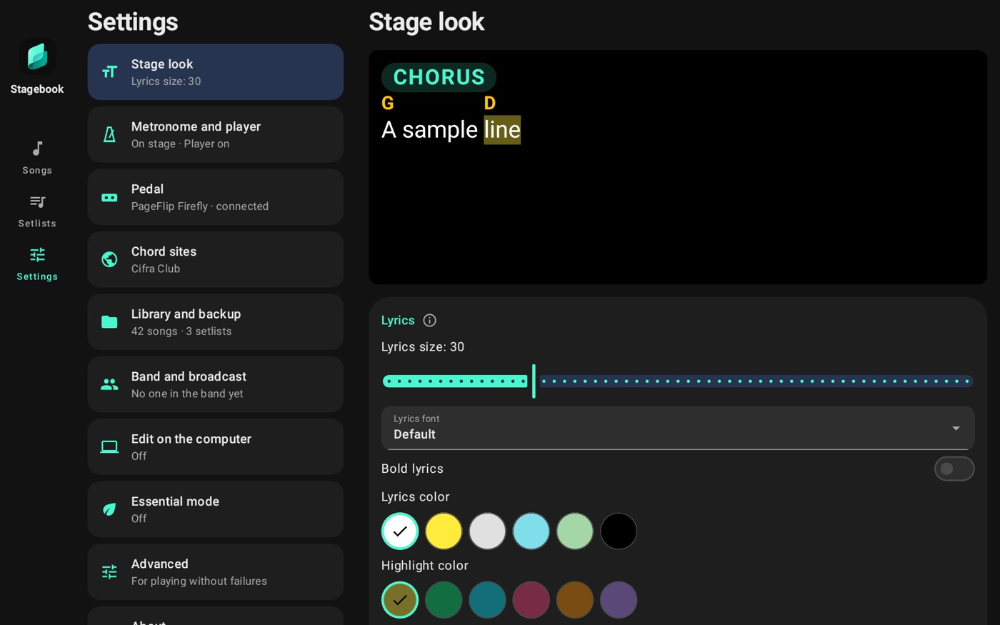
Stage look
Everything here applies to all songs. The sample at the top of the screen stays in place and shows each change right away.
Lyrics
- Lyrics size: applies to all songs. It's the reference for the automatic zoom: a song gets larger or smaller to make the most of the page. On stage, a pinch changes only the open song, and Pages and Scroll each keep their own zoom.
- Lyrics font and Bold lyrics: Default, Condensed, Serif or Monospace.
- Lyrics color, Highlight color and Background color: the highlight is the highlighter's.
If a color gets hard to read on the background, the app warns you right below.
Chords in the lyrics
- On stage: Lyrics and chords shows the chords above the lyrics. Lyrics only shows just the lyrics, with no chords or notes, even on songs with chords.
- Chord size, Chords font and Chord color: these show only with Lyrics and chords.
Section titles
Lines like [Chorus], Verse 2, Bridge, Intro or Solo become highlighted titles on stage.
- Show section titles: off, they leave the stage.
- Title size, Titles font and Section title color: how they look.
- Section names in the app's language: Chorus, Refrão and other forms all show the same way. The saved lyrics don't change.
Page
- Moving on screen: Turn pages shows one page at a time, in one or two columns. Scroll shows the lyrics in a single column.
- Split into columns: only in Turn pages. Automatic splits into 2 columns when the lyrics don't fit one page and the lines are short. You can also pick Never or Always. The pedal turns both columns together.
- Auto-scroll speed: only in Scroll.
Chord diagrams
This card shows only with Lyrics and chords.
- Instrument: acoustic guitar, electric guitar, ukulele, cavaquinho or keyboard.
- Show the diagram when you tap a chord: off, tapping a chord counts as tapping the page.
- Chord sound: Picked, Full chord or Both.
- Chord list: Hide, Start or End. See Chord list.
Screen
Keep the screen on while the app is open: the device doesn't sleep while Stagebook is in front. Outside the app it sleeps normally. The stage always stays lit, with this on or not.
Do not disturb on stage: while the stage is open, notifications don't pop up and the phone doesn't ring. Starred contacts and someone calling twice in a row still get through. When you leave the stage, everything goes back as it was. It comes on.
The first time on stage, the app asks first. Tap Allow and turn on Stagebook in Android's list. Until Android allows it, the card says so and shows the Allow button.
Metronome and player
When essential mode turns one of them off, the item is named after the one left on.
- Show on stage: off, the metronome icon leaves the stage.
- Count-in 1 … 2 … 1 2 3 4: when it starts, two slow beats and then a bar, so the count isn't taken for the start of the song. The stage shows the numbers very big, in a color of their own, and on the pauses there's neither sound nor glow.
- Sound: the metronome's click.
- Volume: the click's volume, from 0 to 100% in steps of 10%, on the device and on the USB output. It only shows with Sound on. It's kept and goes in the backup, with the other settings.
- Test the metronome: plays the click at 100 BPM, with no count-in, on the chosen output and volume, so you can hear it without going to the stage. Tap Stop the test, or leave the screen, to stop it. If you change the volume or the output while it plays, the change counts on the next test.
- Sound output: with the player on, Device is the headphones, if any are connected. Without them, it's the connected Bluetooth, and without either, the speaker. The USB interface outputs let the drummer hear it through the desk. For them to show up, play a track with the interface connected. Through Android, some devices send the click to the USB with the song. On those, Device is disabled.
- Glow on the screen edge and Glow color: the beat flashes on the edge, with no sound.
USB output and track button
- What the USB output needs: a class compliant interface, with USB Audio Class 1.0 or 2.0, at 44.1 or 48 kHz, and a device with USB OTG and the right cable.
- Play on the interface through Android: use it only if the interface connects but there's no sound or it stutters. Sound goes through Android's audio, which can stutter too.
- Each interface has its own way: with the interface plugged in, the switch counts only for it, on this device, and is saved. If Stagebook's engine fails several times in a row with an interface, the app moves to Android's audio by itself and tells you. If Android doesn't play on it, the app goes back to the engine. A choice of yours on the switch always wins. With no interface plugged in, the switch counts for new interfaces.
- The interface charges the device: the card warns when the USB interface sends power to the device. Some interfaces fail on Stagebook's engine this way. If the sound fails, turn on Play on the interface through Android.
- Stop goes back to the start: off, the track button pauses, and the song goes on from where it stopped.
The mixer and equalizer are on the stage.
Pedal and MIDI
Stagebook takes Bluetooth, Bluetooth MIDI and USB MIDI pedals. Which one is mine? explains the difference. The songs' MIDI out is here too.
Connect a pedal or MIDI device
- Regular Bluetooth pedal: turns the page like a keyboard's arrows, as most page turners do. It's paired in Android's Bluetooth settings.
- Bluetooth MIDI device: a pedal or controller that sends MIDI messages, or a device that receives the songs' MIDI, like a rack or a keyboard. The app looks for it right here: tap the device it finds to use it. Then it shows up in MIDI out. Forget removes it from the app.
- MIDI pedal over USB: off, Stagebook leaves the USB free for an audio interface.
A pedal that is off or far away connects by itself when it's on. On older Android versions, location must be on for the search to find a MIDI device.
With a Bluetooth pedal connected, the on-screen keyboard may disappear: the phone takes the pedal for a real keyboard. That comes from Android, not the app. In Gboard, turn on Settings → Physical keyboard → Show on-screen keyboard. In other keyboards, tap the keyboard icon on the bottom bar and turn on the on-screen keyboard.
Buttons
Press a pedal button: it shows here and you pick what it does. The options are Next page, Previous page, Next song, Previous song, Play/pause backing track and Nothing.
Under the pedal's buttons you see each button already pressed, with what it does. One you didn't change shows as default: down and right arrows, Page Down and Space go forward; up and left arrows and Page Up go back. With more than one pedal, the buttons are grouped by pedal, the connected one on top.
MIDI out
Pick where the songs' MIDI goes: a USB or Bluetooth device. Bluetooth shows up in the list once it's connected, in Connect a pedal or MIDI device; if none shows up, the screen says where to connect one. If the chosen device isn't on, it stays in the list as not connected, and MIDI goes there again when it comes back.
A mixer or sound card on USB doesn't show up, because opening its MIDI would take the audio interface from the player.
Chord sites
In Lyrics only, the item is called Lyrics sites. The marked site is where the importer opens, and marking another moves it to the top. Add site puts in a new address, and the × takes one off the list.
Library and backup
- Your library: how many songs and setlists you have.
- Find chorus and verses: on songs with no part titles, the app finds the chorus, which is the verse that repeats, and the verses. The lyrics don't change, and existing titles stay as they are.
- Other ways to share: reminds you that a setlist goes right away through Share.
The automatic split of local and international tags only shows with the app in Portuguese.
Save and open a file
Save file writes a .stagebook with what's checked: Songs and setlists, with each song's zoom, Backing tracks and Settings. It works as a backup, to change devices or to send to someone. To send only the lyrics, uncheck the backing tracks, which make the file large. The file then doesn't carry the audio names either, and whoever gets it sees no missing-audio alert. The same goes for opening a file with the backing tracks unchecked.
Open file shows what the file has for you to check. Join with mine brings only what you don't have. Replace mine swaps your songs and setlists for the file's. The file's settings replace the ones here and, on another device, the band has to be allowed again. The app tells you when that's the case.
Got a .stagebook in a chat, a download or the file manager? Tap it and choose Stagebook. The app opens right on Open file. The file goes through the same checks as Open file. A file that isn't Stagebook's doesn't open, and the app says so. With the stage or a song editor open, the file waits until you leave.
The copy Android itself keeps in your account carries only the songs, the setlists and the app's language. Backing tracks, settings and the band don't go. To take everything to another device, use Save file. A song that arrived without its audio keeps the audio's name. After the file opens, a window lists those songs with each audio's name. In the song editor, the Backing track field turns to the alert color, with that name and the request to attach it again. On stage, an alert shows where play would be.
Erase everything
Leaves the app like new: it erases songs, setlists, backing tracks, settings and the band from this device, for good. The window offers Back up first and asks you to type a confirmation code. If Android keeps a copy of the app in your account, the songs and setlists can come back when you install the app again.
Band and broadcast
- This device: the name the band sees. Change name changes it.
- On the network now: who is on the same Wi-Fi and isn't in the band yet. Ask to join sits next to each one.
- Band: who was already allowed. The lit dot shows who is on this Wi-Fi now, and the empty ring who is off it. A device on another app version shows up marked. The trash can removes them, and to come back they have to ask to join again. Invite over the internet sends a link to someone far away. See Joining the band.
- Tell what's playing: Send the current song to OBS and others tells the network which song is on stage, with artist, key and BPM. The lyrics never go out. It comes off. See the Now Playing guide.
Day-to-day use is in Band.
Edit on the computer
Turns the web editor on and lists the Authorized computers. See Editor on the computer.
Essential mode
It's for a simpler screen. Turning on essential mode leaves only lyrics, chords, diagrams and the pedal, and turns off what runs in the background. In What stays on you can turn off just part of it:
- Band on the network: finding the band on Wi-Fi, sending through the band and Lead the band.
- Internet: sending and receiving over the internet, new app versions and filling in artist, year and BPM.
- Track player: backing tracks, USB audio interface and mixer.
- Metronome and chord extras: chord sound and details, metronome, Now Playing and song MIDI.
Once off, a part leaves the screen and stops running. In Settings, the cards and options that exist only for it go away too:
- Band on the network and Internet: the Band and broadcast section (only Now Playing stays, with the extras), the link to authorize the band again in Library and backup, and the new-version notice in About.
- Track player: the player card in Metronome and player, the For playing without failures card in Advanced and the backing track play command in the pedal buttons. With no player, nothing opens the USB audio interface stream.
- Metronome and chord extras: the metronome card, Now Playing, the song MIDI in Pedal and MIDI, the chord sound and details, and the metronome icon on stage.
A menu item goes away when all of its parts are off. What holds your data stays, like the backing tracks in the backup list. While any part is off, a notice when the app opens lists what's out and leads back here. Don't show again removes it. A leaf next to the title of Songs and Setlists is a reminder: solid with everything off, dimmed with only some parts off, and tapping it shows what's out. It never shows on stage. See How light it is.
Advanced
These are Android's own settings. To change them, Stagebook needs a permission given once from a computer with adb: the screen shows the command and Copy the command. Without it the settings show but don't change. Some only exist on certain devices and only show there.
They apply to the whole device, not just Stagebook. The app writes them again every time it opens, because Android sometimes goes back by itself. So change them with these switches: what you change in Android's settings comes back the next time it opens. Turning a switch off brings back the value the device had before Stagebook changed it. Once off, the switch stops writing. The ones under “For playing without failures” are only written with the player on; with it off, Stagebook leaves them alone. Debugging is the exception: it's never written again.
For playing without failures
These have dropped the audio interface or stopped the app on stage. They come on; turn one off only if you know why.
- Free from battery saving: Android won't stop Stagebook with the screen off. This one works without adb: it's one tap on Allow.
- Smart charging off: on some tablets, charge protection drops the USB interface for a moment. The cost is charging up to 100%.
- Battery manager off: Android stops suggesting restricting Stagebook.
Device battery
- Shorter animations: screens change faster and use less battery.
- Screen off after 10 minutes: outside the stage.
- No searches in the background: Wi-Fi and Bluetooth stop looking for location while they're off.
- Mobile data only without Wi-Fi: mobile data doesn't stay on with Wi-Fi connected.
Computer
- Developer mode and Wi-Fi debugging: for testing from a computer with adb. It comes off.
About
- Help: Open the help brings you to this page, at stagebook.app.br/help. It needs the internet.
- Language: Automatic follows the device, or pick Portuguese or English. To help translate, follow the translation guide.
- Update the app: the installed version and Check for updates. See Updating.
- Privacy, Source available and Support Stagebook: how your data is handled, the app's code and how to support it.
On a tablet, the version also shows under the logo at the top of the side bar. Tapping the logo opens just About, and the arrow takes you back to the screen you were on.
Editor on the computer
The editor opens Stagebook in the computer's browser: a real keyboard, a big screen and everything saved straight to the device. The stage updates right away. Nothing goes through the internet: the computer talks only to the device, on your Wi-Fi.
Turn it on and come in
- On the device, in Settings → Edit on the computer, tap Turn on the editor. An address shows up, like http://192.168.0.10:8090.
- Open that address in the computer's browser, on the same Wi-Fi. Guest networks usually block devices from talking to each other.
- Tap Ask to come in. The device shows a 4-digit code. Allow it only if it matches the page.
- The computer is kept under Authorized computers, and you can remove it from there at any time.
Songs
- On the left are the search, the tag filter and the list. Click a song to open it, or New song to start one.
- You can edit name, artist, year, BPM, tags and the lyrics with chords. Separate tags with commas; the ones you already use show up as suggestions.
- The − and + buttons change the key and the capo, as in the app. The song only changes for good when you save.
- To highlight a phrase, select it and click Highlighter.
- Song MIDI holds the messages On entering and On leaving, as in the app's editor.
- Once the song is saved, you can send its backing track as OGG, MP3 or WAV.
- Ctrl+S saves. If you leave with something unsaved, the page warns you first.
Setlists
- The search finds a setlist by name. The Order dropdown shows the newest first or A to Z, and the choice also applies to the device's Setlists tab.
- Inside a setlist, the search below adds songs and the arrows move each one.
Importing
- Paste a page address and click Bring the song, or paste lyrics with chords in any common format and click Convert. The song opens in the editor so you can check it before saving.
- Drop .txt, .pro or .chordpro files on the files area, or use Choose files, to bring in several at once.
- Type the 3 words to receive what someone shared, check what you already have and create the setlist.
- Received from the band holds what they sent, with the button to sync.
- Opening a
.stagebookfile shows what the backup has. You pick the parts, then merge them with what's there or replace everything.
While it's on
The computer icon shows next to the tabs' titles. Tap it to see the address and close the editor. It starts off every time the app opens, and turns off by itself after 5 minutes unused or when you close the app.
AI assistants
With Stagebook's MCP server, AI assistants like Claude, Cursor or Gemini work on your library through the same editor. You ask in plain words and the assistant does it on the device, with no copying and pasting.
What you need
- Node.js 20 or newer on the computer. The server is on npm as
stagebook-mcp, and the assistant downloads and updates it by itself. - The device and the computer on the same Wi-Fi, with Stagebook open and Settings → Edit on the computer turned on.
Connect your assistant
- Claude Code: run
claude mcp add stagebook -- npx -y stagebook-mcp. - Claude Desktop, Cursor, Windsurf and Gemini CLI: in the MCP settings, add
{ "mcpServers": { "stagebook": { "command": "npx", "args": ["-y", "stagebook-mcp"] } } }. - VS Code and OpenAI Codex CLI: the format changes a little. See the server guide, which also says where each assistant keeps its file.
- The ChatGPT app only reaches servers over the internet, so it can't get to the device on your Wi-Fi.
First connection
- Ask the assistant to connect to Stagebook. It searches the network, or you give it the address shown on the device.
- The device shows a request with a code. If it matches, tap Allow. Next time it comes in without asking.
- The authorization lasts 90 days unused, and Authorized computers removes it at any time.
What you can ask
- Songs: "find the songs in G", "move this one down a half tone", "put a capo on 2", "check this one's chords".
- Importing: "import these chords", pasting the text or the page address.
- Setlists: "build a setlist for Saturday with 15 songs", "find the wedding setlist", "put the setlists A to Z".
- Backing tracks: "use this file as the song's track", with the file's full path.
- Receiving: "receive the setlist with these 3 words", "what did the band send?".
- Backup: "what's in this .stagebook file?" and "merge what's missing".
What asks you first
Deleting, removing a track, emptying a setlist, replacing the library and restoring settings only happen after the assistant asks you.
If it doesn't connect
- It can't find the device: check that Stagebook is open, the editor is on and both are on the same Wi-Fi. The editor turns off when unused. Give the assistant the address.
- On a Mac: in System Settings → Privacy & Security → Local Network, turn on the app running the assistant and reopen that app.
- The key no longer works: it was removed or went 90 days unused. Connect again.
- A request is already on screen: answer it on the device. After a Deny, it waits 5 minutes before taking another.
- One part doesn't answer: receiving by code needs the internet on, and the band tools need the band on, in the device's Settings.
Privacy
The server only talks to the device. The assistant sees what the tools return, like titles, artists, chords and, when it asks, the lyrics, and sends that to its AI provider, like the rest of the conversation.
Updating
When a new version is out, the app tells you when it opens and shows what changed. Update downloads the version and installs it. The first time Android asks you to confirm. From then on, on Android 12 or newer, the app updates without asking again and restarts to finish. On Android 11 or older, Android asks to confirm every version. Not now leaves it for the next day. If you just close the window, the notice comes back the next time you open the app. If you skipped versions, you see what changed in each one. The same list is in Settings → About → Update the app. It's best if the whole band uses the same version; a device on another one shows up marked in Settings → Band and broadcast.
While Android installs, the Install button stays off. It comes back when Android answers or when you come back to the app. On Samsung devices, Auto Blocker can stop the install, and it turns itself back on after a while. When the new version finishes downloading, the window shows Open Auto Blocker: turn it off and come back to install. The button also shows in Settings → About → Update the app.
Your songs and settings stay on the device. What goes to the band or over the internet is encrypted. There's no account, no ads and no tracking.
When the install finishes, Android closes the app. It comes back open on the screen you were on. Where Android doesn't let the app open by itself, the notification Stagebook updated shows up: tap it and the app goes back where you were.
How light it is
Stagebook was measured on four devices: a TCL NXTPAPER 11 Plus tablet, a Galaxy S26 Ultra, a OnePlus 10 Pro and a simpler Chuwi Hi10 XPro tablet. Idle on the list or the stage it uses less than 1% of one processor core; turning pages, up to 15%; playing a backing track, 4% to 19%. All four devices have 8 cores, so even playing it uses less than 3% of the whole processor.
Memory stays between 30 and 255 MB, depending on the device and the screen. Essential mode barely changes these numbers: its gain is keeping on screen only what you use.
Playing a track over the USB interface, the app used between 3.7% and 31.3% of one core, depending on the device and the interface: on the S26, 6.7% with the USB Audio 2.0 mixer and 3.7% with the USB Audio 1.0 card; on the Chuwi, 29.3% and 16.9%; on the OnePlus, 31.3% and 22.2%; on the TCL, 5.1% and 3.0%. The TCL was measured at 70% battery with Android keeping six of its eight cores at low frequency, so its numbers count only the two available cores, weighted by frequency. Unweighted they are 19.5% and 10.0%. With the player on and the interface plugged in but nothing playing, the app closes the USB stream after 10 seconds, so it doesn't use battery for nothing. Playing a track or turning on the metronome on the interface opens it again in a fraction of a second. Every time it opens, the app checks for about 2 seconds that the interface's clock is right, and the sound only starts after that; the notice to wait shows if it takes longer than half a second. The check happens once, before the music, so the sound doesn't change in the middle of it. Before it closed, the idle stream used about 19% of one core on the OnePlus; with it closed, the app uses 0.4% on the OnePlus, 0.4% on the TCL, 0.1% on the S26 and 0.1% on the Chuwi.
If something doesn't work
The most common messages and what to do. For AI assistants, see If it doesn't connect.
Sound and USB interface
- The USB output didn't respond: unplug the cable and plug it back in.
- The interface doesn't show up in the app, even with the cable plugged in: turn the interface off and on, then unplug the cable and plug it back in, flipping the connector. Some USB-C ports stay powered without exchanging data until the interface is reconnected. On some devices the app notices it and says so on the stage, with A USB cable is plugged in, but the interface doesn't answer. On the others, Android only lists the interface after it answers, and the app has no way to know.
- No USB output found: the sound went to the device's output. Check the cable and adapter.
- USB output disconnected: the app waits for the interface to come back. Check the cable.
- USB output permission denied: unplug and plug the cable and allow it, as in The first time with the interface.
- Small hiccups in the sound: see If you hear small hiccups.
- The interface connects but there's no sound, or it stutters: turn on Play on the interface through Android.
- The app moved to Android by itself, or back to the engine: one way failed several times with that interface. The choice is saved for it. To change it, use the switch with the interface plugged in.
- The interface doesn't work: it has to be class compliant, with USB Audio 1.0 or 2.0, at 44.1 or 48 kHz. Also check the cable and that the device has USB OTG.
- This file won't work: use OGG, MP3 or WAV.
- The sound drops now and then: check For playing without failures.
Pedal
- No MIDI pedal found: check that it's on, nearby and in Bluetooth MIDI mode, and that the device's Bluetooth is on.
- This device doesn't support MIDI: use a regular Bluetooth pedal.
- The on-screen keyboard disappeared: see Connect a pedal or MIDI device.
QR and 3 words
- The QR came in incomplete: move closer and scan again.
- This QR isn't from Stagebook: point at the setlist QR or the 3 words QR.
- Nothing came with these words: check them. They last 12 hours after sending.
- It came from a newer Stagebook: update the app to receive it.
Band
- It can't find the other device: both must be on the same Wi-Fi, with Band and broadcast open.
- Different app version: update both to the same version.
- They're on stage right now: ask again after the show.
Importing
- Couldn't find the lyrics on this page: open the song's page, or select the lyrics with your finger and tap Import.
- This is the search page: open the chords page and tap Import.
- This doesn't look like lyrics or chords: Stagebook only keeps lyrics and chords, as text.
Updating
- On a Samsung, the update won't install: turn off Auto Blocker, as in Updating, and try again.
- The download didn't finish: check the internet and tap Try again. If the server fails for a moment, the app already tries again by itself a few times.
- Error installing the update: update again, from the window or in Settings → About → Update the app. This time the install goes through Android's screen.
Editor on the computer
- Can't reach Stagebook: check that the app is open and the editor is on. It turns off by itself after 5 minutes unused.
- The page doesn't open: both must be on the same Wi-Fi, and guest networks usually block it.